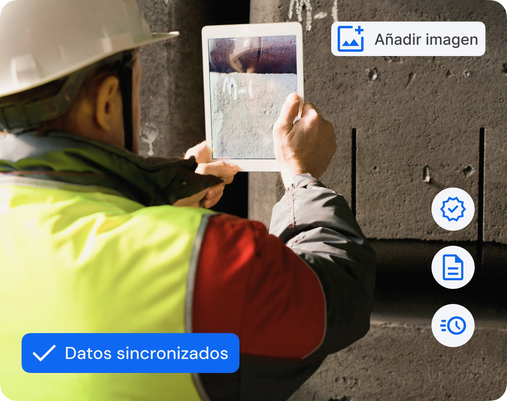

Detecta, registra y soluciona incidencias con la agilidad que tu equipo necesita. Desde el aviso hasta la resolución, todo bajo control.
Descubre cómo funciona
Simplifica el cumplimiento normativo (IFS, BRC, ISO 9001, etc.) con registros digitales siempre disponibles y actualizados en tiempo real.
Detecta tendencias con informes automáticos, identifica patrones de fallos y toma decisiones estratégicas antes de que los problemas afecten la producción.
Evita la duplicidad de datos y optimiza la gestión conectando Solved con tus herramientas de producción y mantenimiento.
Elimina el papeleo, reduce tiempos de respuesta y aumenta la productividad del equipo de calidad, generando un impacto directo en los costes operativos.
Desde móvil, tablet o PC, registra cualquier problema en segundos con fotos y vídeos, directamente en la planta de producción.

Descubre cómo han mejorado las métricas de nuestros clientes en el primer año
Desde móvil, tablet o PC, documenta todos los detalles, adjunta fotos o vídeos, asigna responsables y haz seguimiento en tiempo real.
Configura procesos personalizados para que cada incidencia llegue a la persona correcta sin demoras.
No dependas de volver a la oficina, registra, revisa y actualiza incidencias en cualquier momento y lugar.
Consulta gráficos y tendencias de incidencias para detectar puntos críticos y prevenir problemas futuros.
Optimiza la gestión conectando Solved con tus herramientas de producción y mantenimiento.
Desde móvil, tablet o PC, en segundos: describes el problema, adjuntas fotos o vídeos y asignas responsables, directamente en la planta de producción.
Sí. Configuras flujos de trabajo personalizados para que cada incidencia llegue a la persona correcta sin demoras y se resuelva más rápido.
Sí. Centraliza incidencias y no conformidades en un solo lugar, con seguimiento desde el aviso hasta la acción correctiva y su cierre.
Sí. Solved se conecta con tus herramientas de producción y mantenimiento para evitar duplicidad de datos.
Sí. Accedes a gráficos y tendencias en tiempo real para detectar puntos críticos y prevenir problemas recurrentes.